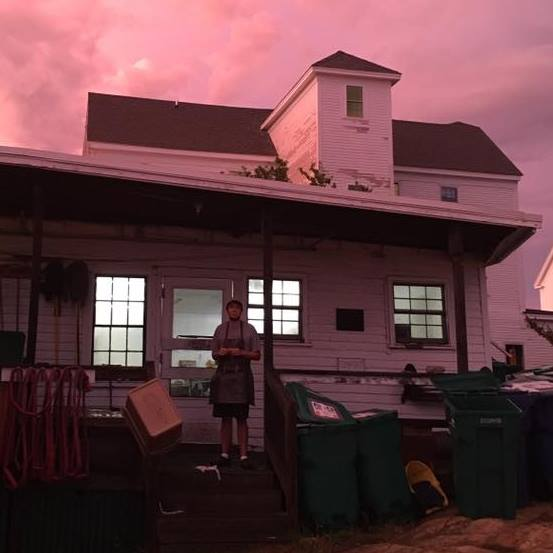

About Me
Hello, I am Griffin Wagner I am a recent graduate of Champlain College in Burlington, VT. I am a graphic designer with a strong passion for design. I love the process of design and exploring and shaping something until it is near perfect, while exploring every possibility along the way. The twists and turns of design and the spontaneous and unique aspects of design is what keeps pulling me in and gets me excited for design. I am always looking for new opportunities, so feel free to contact me using the information bellow.
Education
Bachelor of Fine arts in Graphic Design and Digital Media at Champlain College, Burlington VT, 2019.
3.6 GPA and was on the Dean’s List for fall semester 2016, Spring 2018. Graduated Cum Laude.
Past Employment
On the Water Media, Falmouth MA, Summer 2019, Design Intern
- Worked on designing concepts for merchandise, signage and advertising.
- Created and worked on spreads and assets that would be used in the magazine.
- Worked with a small team, and created designs in conjunction with them.
Powder Horn Press, Plymouth MA, January-Febuary 2020, Design and Print Production Assistant
- Designed and created flyers, business cards, and other projects for clients.
- Helped prepare and set-up adobe documents for print
- Assisted in the production of booklets handouts and other Printed materials.
Skills
- Adobe Creative Cloud
- HTML, CSS & Java Script
- Typography
- Google Apps
- Microsoft Office
- Photo Editing and Manipulation
- Print Production
- Branding
- Creating Mock-ups and Demos